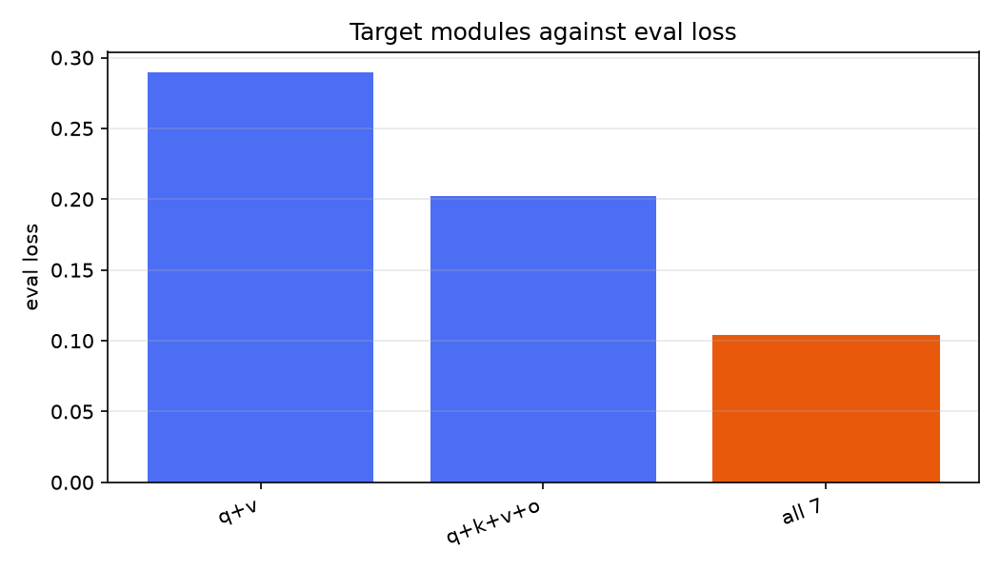
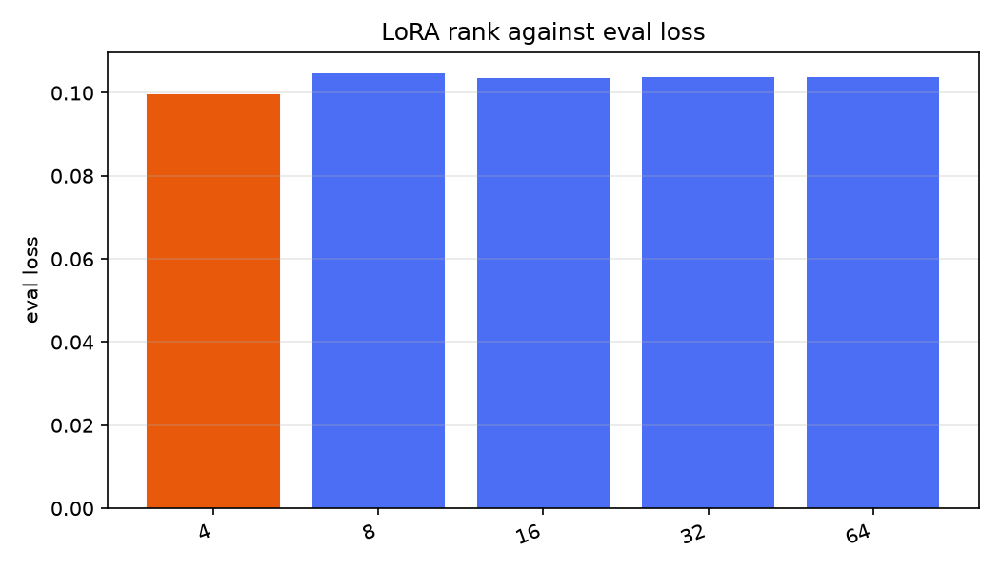
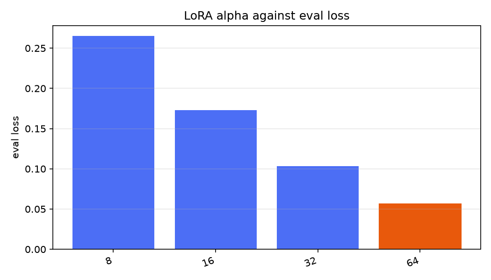
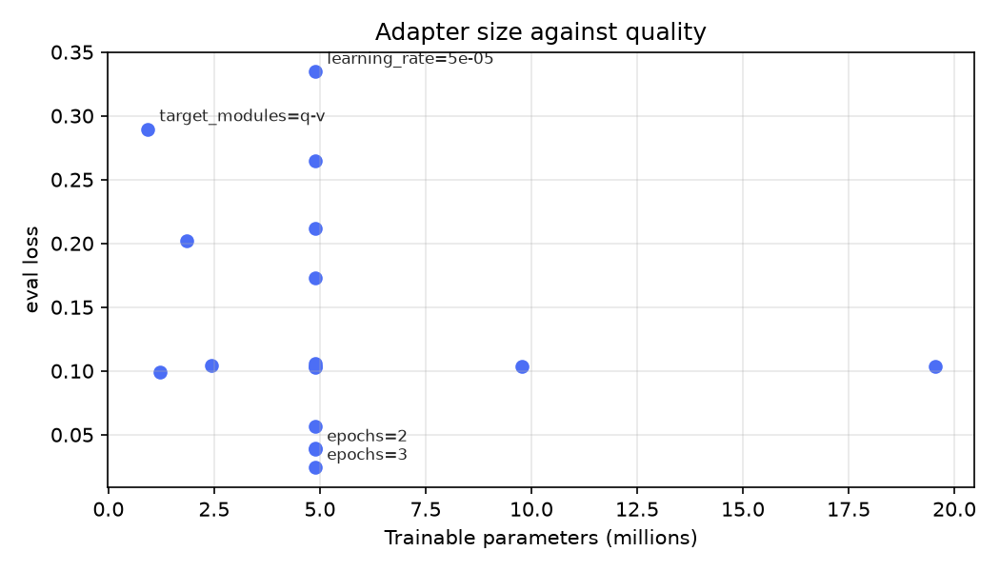

A 135-million-parameter model, fine-tuned with LoRA, that turns European fund disclosure documents into validated JSON. Trained and evaluated entirely on a 2019 laptop CPU.
On the left, a generated fund document. In the middle, SmolLM2‑135M prompted with the schema. On the right, the identical model after LoRA fine‑tuning. Press replay to watch both generate, at eight times real speed.
Watch what the prompted model does, not just whether it finishes. Depending on the document it invents keys the schema never mentions, repeats whole blocks until it runs out of tokens, or fills unrelated fields with the same value — a currency code arriving in benchmark, domicile and management_company alike. It has learned the shape of JSON and none of the task. That is why schema validity is 0.00 rather than merely low, and it is the behaviour fine‑tuning fixes.
Every investment product sold to retail investors in the EU must publish a Key Information Document. Distributors need the numbers inside them — risk indicator, ongoing charges, holding period — as structured data, across thousands of funds and dozens of providers who agree on almost nothing.
The document is already in the context window, so there is no knowledge gap for retrieval to fill. What goes wrong with a prompted small model is behaviour: it drifts on JSON structure, renames fields between documents, and guesses when a field is absent instead of returning null. Those are format problems, and supervised fine-tuning is what fixes them.
There is no public corpus of these documents — ESMA states no central European database exists — so the training set is generated: twelve provider layouts, four languages, both document families, with ground truth produced by the same code that renders the text.
All four systems scored by identical code on the same 50 documents, whose layouts and label wordings were held out of training entirely.
| System | Micro F1 | Exact | Schema valid | Hallucination | Latency |
|---|---|---|---|---|---|
| Fine-tuned 135M | 0.858 | 0.02 | 0.88 | 0.005 | 21.3 s |
| Rules (regex) | 0.643 | 0.00 | 1.00 | 0.000 | 0.001 s |
| Few-shot 135M | 0.169 | 0.00 | 0.50 | 0.491 | 40.0 s |
| Zero-shot 135M | 0.000 | 0.00 | 0.00 | — | 28.1 s |
The regex baseline is the number worth dwelling on. On documents whose wording it already knows it scores 0.983 — better than the model, and twenty thousand times faster. It collapses to 0.643 the moment a provider uses an unfamiliar phrase for the same field, because every label-dependent field drops to exactly zero. That gap is what the fine-tune exists to close, and it is why the evaluation reserves label vocabulary rather than only holding out layouts.
The risk indicator below is the one that appears in every real KID. Here it rates how far these results should be trusted outside the conditions they were measured in.
Every figure here is measured on generated text, which is more regular than real provider PDFs. Absolute scores should be assumed optimistic. A hand-labelled set of real documents is the outstanding work.
Per-field accuracy of 0.858 is not whole-record accuracy. Getting all 23 fields right simultaneously is rare. Validate fields individually rather than trusting a record wholesale.
Schema validity drops from 1.00 on familiar layouts to 0.88 on unfamiliar ones. A production pipeline needs a retry path.
The ablation used one seed per configuration. Only large gaps are meaningful; small differences are noise and are reported as such.
| Item | Cost |
|---|---|
| Training the published adapter | 5.7 hours, 4 CPU threads |
| Trainable parameters | 4.88 M of 139 M (3.5%) |
| Adapter on disk | 19.6 MB |
| Peak memory while training | 1.4 GB |
| Extraction, per document | 21 s on CPU |
| GPU hours | 0 |
| Money spent | 0 |
Seventeen configurations, one axis at a time against a fixed baseline. The result contradicts the obvious intuition: how wide you make the adapter does not matter, but which layers you attach it to matters enormously.
| Configuration | Trainable | Eval loss | Micro F1 |
|---|---|---|---|
| Rank 4, all seven modules | 1.22 M | 0.0994 | 0.252 |
| Rank 16, all seven modules | 4.88 M | 0.1036 | 0.179 |
| Rank 64, all seven modules | 19.54 M | 0.1037 | — |
| Rank 16, q k v o only | 1.84 M | 0.2022 | — |
| Rank 16, q v only | 0.92 M | 0.2896 | 0.007 |



